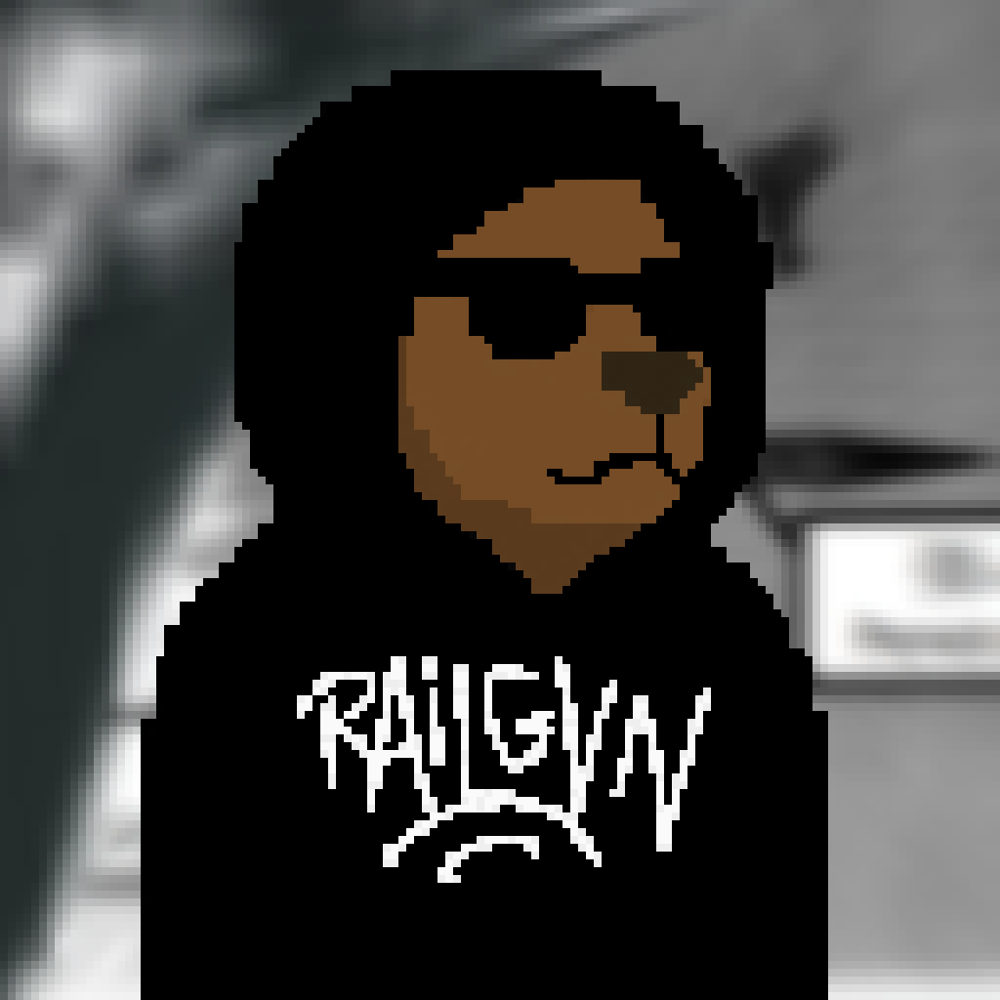

THE ANON BERAS PROJECT

About The Project
The shadows conceal our identities, but our vision illuminates the digital darkness. We are the guardians of privacy in a world that has forgotten the value of anonymity. Trust no one, verify everything. Remember: In the realm of bits and bytes, true freedom comes from remaining unseen, untracked, unknown. We are The Anon Beras Project.
Roadmap
Phase 1
REDACTED
Phase 2
REDACTED
Phase 3
REDACTED